Keeled
heart urchin
Brissus latecarinatus
updated Apr 2020
Where
seen? Usually only their skeletons are seen on some of our shores. Living ones are generally seen above ground
only at night. They are usually buried in the sand. In seagrass meadows near reefs, also under stones
in submerged reefs.
Features: 8-10cm long. Body oval
egg-shaped, without a deep groove in the front. A large petaloid that
can be seen even in living animals, with plain (unbanded) medium length
to short spines densely covering the body. |

Upperside.
Several seen above ground
after the May 2010 oil spill at Tanah Merah.
Tanah Merah, May 10 |
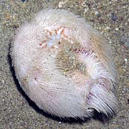
Underside.
Tanah Merah, May 10 |
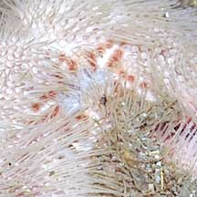
Mouth on the underside. |

Upperside.
Pulau Sekudu, Dec 03 |
|

Underside. |
| Keeled
heart urchins on Singapore shores |
| Other sightings on Singapore shores |
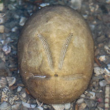
Changi, Apr 20
Photo shared by Jonathan Tan on facebook. |
|
|
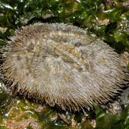
Pulau Sekudu,
Apr 09
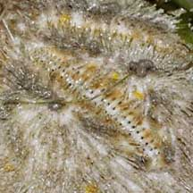
Photo shared by Toh Chay Hoon on her
blog. |
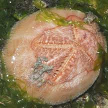
Pulau Sekudu,
Apr 09
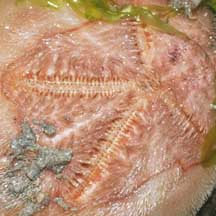
Photo shared by Toh Chay Hoon on her
blog. |
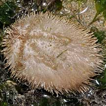
Pulau Sekudu,
May 10
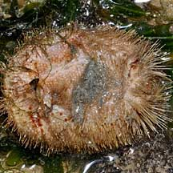
Photo shared by Toh Chay Hoon on her
blog. |
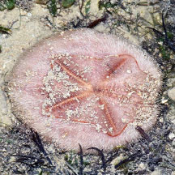
Pulau Sekudu,
Jun 17
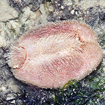
Photo shared by Loh Kok Sheng on facebook. |
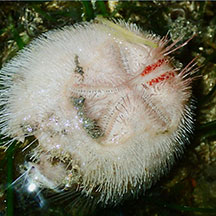
Pulau Sekudu,
Aug 23
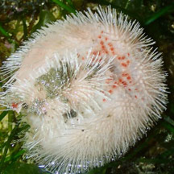
Photo shared by Chay Hoon on facebook. |
|
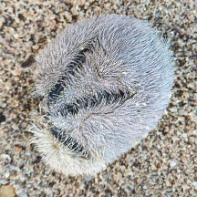
St John's Island, Apr 25
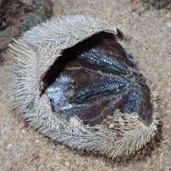
Photo shared by Mathias Luk on facebook. |
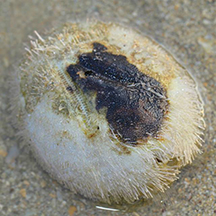
Small Sisters Island, Feb 15
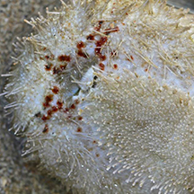
Photo shared by Russel Low on facebook. |
|
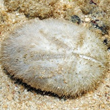
Terumbu Selegie, Jun 11
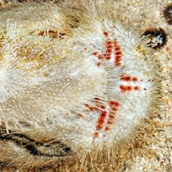
Photo shared by Loh Kok Sheng on his
blog. |
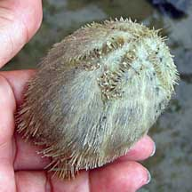
Cyrene
Reef, Jun 10
|
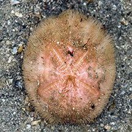
Cyrene Reef, Aug 18
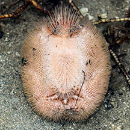
Photo shared by Jonathan Tan on facebook. |
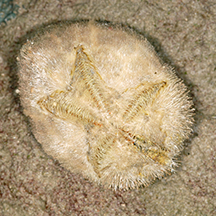
Kusu Island, Jun 12
Photo shared by Heng Pei Yan on her blog. |
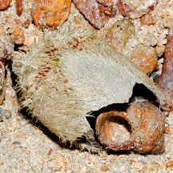
Pulau Jong, Jul 12
Photo shared by Loh Kok Sheng on his blog. |
|
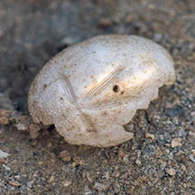
Beting Bemban Besar, Nov 18
Photo shared by Juria Toramae on facebook. |
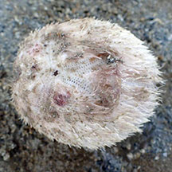
Beting Bemban Besar, Jul 20
Photo shared by Dayna Cheah on facebook. |
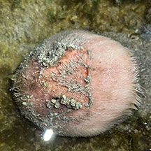
Beting Bemban Besar, Oct 25
Photo shared by Kelvin Yong on facebook. |
References
- New records of the keeled heart urchin, Brissus latecarinatus, in Singapore. 27 March 2020. Ria Tan, Teresa Stephanie Tay & Neo Mei Lin. Singapore Biodiversity Records 2020: 26-27 ISSN 2345-7597.
- Brissus latecarinatus on SeaLife Base: Technical fact sheet.
|
|
|